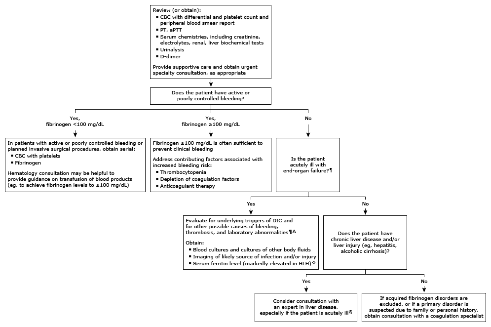

Initial evaluation of low plasma fibrinogen in adults*

This algorithm is intended for use with additional UpToDate content on fibrinogen disorders.
CBC: complete blood count; PT: prothrombin time; aPTT: activated partial thromboplastin time; DIC: disseminated intravascular coagulation; HLH: hemophagocytic lymphohistiocytosis. * The reference range for plasma fibrinogen, measured as either activity or antigen, is approximately 200 to 400 mg/dL. Interpretation of a specific abnormal result should be based on the reference range reported with that result. ¶ The diagnosis of DIC should be suspected in acutely ill patients with end-organ failure, bleeding, and/or thrombosis. The diagnosis is based on findings of coagulopathy (thrombocytopenia, prolonged PT, aPTT) and/or profound fibrinolysis (markedly increased D-dimer) in the appropriate setting in the absence of another cause. Δ Common underlying condition(s) that initiate DIC:
Bacterial sepsis
Hemorrhagic shock
Severe acidosis
Obstetric complications
Hematologic malignancies
Toxins (eg, snake or spider bite)
Extensive tissue damage
◊ Findings of fever with multiple organ involvement, neurologic changes, cytopenia (especially anemia and thrombocytopenia), liver enzyme abnormalities, and very high ferritin levels suggest the diagnosis of HLH. § Hemostatic abnormalities in patients with liver disease may be indistinguishable from laboratory findings in DIC. D-dimer levels are generally normal or mildly elevated in liver disease and markedly elevated in DIC. However, significant overlap exists, and patients with chronic liver disease are at increased risk for developing acute DIC, bleeding, and thrombosis.